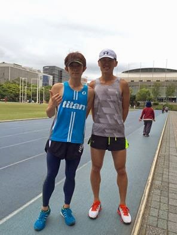

進步慢一點比較好！

今天在遠流出版社和 Abby 的促成下，與南拳媽媽一、二代成員的宇豪見面分享跑步訓練的知識，也一起在松山運動中心旁的 300m 操場跑了一小段。
談話間，可以感受到一位認真跑者想進步的熱切心情。他於三年前開始跑步，目前的 PB 是今年三月的萬金馬：3 小時 36 分，他說破三是他的夢想。
他的下一場目標賽事是日本的大阪馬，問我該如何規劃訓練計畫。因為時間與地域上的限制，無法詳細說明，但還是粗略地替他規劃了訓練計畫，在此做個紀錄……
先很快跟他說明馬拉松訓練的四個週期與其進程為：
E 強度→ I 強度→T 強度→M 強度
因為現在離十月的大阪馬還有六個月，他目前的 5 公里最佳成績為 20 分 22 秒，耐力網上的跑力為 48，因此我替他安排的訓練強度與時程為：
Ⓞ第一週期：為期六週，以 E 強度為主（宇豪的 E 配速上限為 05:28/km），每週至少跑一次超過 2 小時的 LSD，其他日子也都以 E 強度的課表為主，其中要選兩到三次的 E 課表在之後加上 R 強度的快步跑，用來消除 LSD 的副作用。此時期的月跑量至少要達 300k。
Ⓞ第二週期：為期六週，以 I 強度為主，每週練 6~10 趟亞索八百（宇豪的 I 配速為 04:03/km = 01:36/400m），第一週先從 6 趟開始，每週練兩次，逐週增加一趟，最多到 10 趟。亞索的隔天為休息日，進行緩和跑 20~30 分鐘。其他訓練日子中至少還要排一次 2 小時以上的 LSD。
Ⓞ第三週期：為期六週，以 T 強度為主，每週練兩次 T 強度的配速跑（宇豪的 T 配速為 04:24/km＝01:45/400m），其餘天數要練一次亞索八百、一次 LSD。若還吃得下，也有時間則以 E 配速跑即可。
Ⓞ第四週期：為期六週，以 M 配速為主（宇豪的 M 配速為 04:41/km），每週跑兩次 M 配速跑，訓練時間 1.5~2 小時。其餘天數要練一次 T 配速跑、一次亞索八百、一次 2.5 小時的 E 強度 LSD。還有個重點是，比賽前兩週就要開始減量，讓身體在比賽前恢復到最佳狀態。
談完體能後，現場再幫他拍攝跑步動作以及分析跑姿，發現他的問題在跨步與腿尾巴太長了，使得腳落地後支撐期過長，不只減慢速度也提高了受傷的風險。現場教了他一些技術改正的要領與肌力動作……
事後宇豪問：「這樣就能進到三小時嗎？」
我笑著說：「不能！如果你有耐心跑完這個週期的話一定會進步，但不可能今年就破三，就算可以的話也不建議急於求成。進步慢一點比較好！」我補充說：「比較好玩……也比較安全。」有了上一次破三課程的經驗後，我更深刻地體悟到「慢」的意義，要慢才跑得遠，進步也是。
從大陸跟著博士教學，以及今天跟宇豪與之前東華鐵人隊的朋友 Amos 談完後，覺得自己似乎對教練的工作愈來愈感興趣……開始體認到教練這個角色的價值所在。